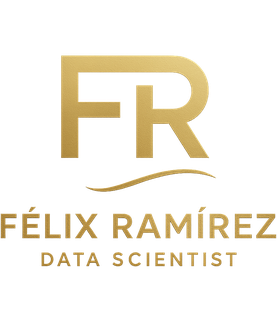

La final de la Eurocopa femenina, movida con el dedo — y el control del espacio, en vivo.
Arrastra la barra. Cada parada es un instante real del partido.
No son las 22 jugadoras. Un marco de 360 de StatsBomb trae a las que salían en el encuadre de la televisión en ese instante, no a todas. Por eso arriba a la izquierda va, cambiando en cada momento, cuántas se ven de 22 y qué porcentaje del campo cubría la cámara.
El control del espacio se pinta sólo dentro de lo que se veía. Fuera de ese polígono hay jugadoras que no aparecen, y colorear quién domina una zona sin saber quién está en ella no es un modelo: es un dibujo.
Los puntos no tienen nombre, y no es un olvido. Cada jugadora de un marco de 360 trae cuatro cosas: de qué equipo es, si es portera, si lleva el balón y dónde está. Nombre, dorsal o identificador, no. El único nombre que aparece es el de quien ejecuta la acción, y ése sale del evento, no del marco. Poner los otros trece sería inventármelos.
El modelo, entero: el tiempo que tarda una jugadora en llegar a un punto
es distancia / 5 m/s; el del equipo es el de su jugadora más
rápida; y el control es la logística de la diferencia entre los dos tiempos,
con τ = 0,7 s. Es la versión sin velocidades: los marcos traen
posición pero no hacia dónde iba cada una, así que se asume que todas parten
paradas. Con datos de seguimiento de verdad, las transiciones rápidas salen
distintas. Aquí no se puede, y se dice.
Esto no es un vídeo. Entre un instante y el siguiente no se enseña nada, porque no se sabe: inventar el movimiento intermedio sería dibujar posiciones que nadie midió.
Por qué este partido y no uno de ayer. Los datos de posición abiertos con marcos de 360 existen para doce competiciones, y la más reciente es justo ésta: la Eurocopa femenina de 2025. No hay nada más nuevo que sea gratis. Del torneo entero hay 31 partidos y los 31 tienen estos datos.